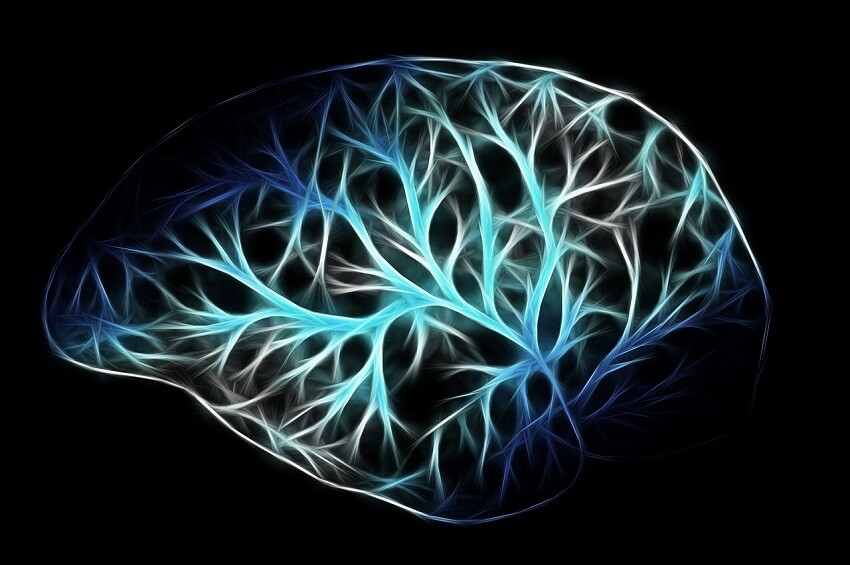

Ο ανθρώπινος εγκέφαλος, αν και ζυγίζει γύρω στο 1,5 κιλό και έχει όγκο κατά μέσο όρο μόλις 1200 κυβικά εκατοστά, είναι όμως το πιο πολύπλοκο σύστημα που υπάρχει στο Σύμπαν! Έχει περίπου 200 δισεκατομμύρια νευρικά κύτταρα τα οποία συνδέονται μεταξύ τους με νευρικές συνάψεις.
Μόνο στον εγκεφαλικό φλοιό υπάρχουν 125 τρισεκατομμύρια συνάψεις, όσα είναι δηλαδή σε πλήθος τα αστέρια 1500 γαλαξιών! Μέσα στον εγκέφαλο υπάρχουν περιοχές (κέντρα) που δίνουν εντολές για την εκτέλεση όλων των λειτουργιών του σώματος, αλλά και περιοχές για ανώτερες λειτουργίες όπως η σκέψη, η μνήμη κ.ά. Η γνωστή σε όλους μας Φαιά Ουσία (Gray Matter) είναι το στρώμα του εγκεφαλικού ιστού στο οποίο συμβαίνουν οι διανοητικές διεργασίες (σκέψη, μνήμη, κρίση κ.ά.) και ονομάζεται έτσι επειδή έχει γκρι χρώμα (φαιός = γκρίζος).
Θα μπορούσε ένα τέτοιο όργανο να είναι αποτέλεσμα μιας μακραίωνης διαδικασίας εξέλιξης;
Πριν περίπου δύο μήνες, στην επιθεώρηση “Nature” δημοσιεύθηκε μια ερευνητική εργασία με τίτλο BrainChart από διεθνή ομάδα ερευνητών (με συμμετοχή μάλιστα δύο ελλήνων καθηγητών του εξωτερικού) στην οποία περιγράφεται η ανάπτυξη ενός κλινικού εργαλείου που στο μέλλον θα μπορούσε να χρησιμοποιηθεί όπως οι καμπύλες ανάπτυξης των παιδιών, με βάση τις οποίες ένας παιδίατρος παρακολουθεί τη φυσιολογική εξέλιξη του ύψους και του βάρους τους. Η σειρά καμπυλών που δημιούργησε και δημοσιεύει ελεύθερα στο διαδίκτυο η συγκεκριμένη ομάδα νευροεπιστημόνων, καλύπτει την εγκεφαλική ανάπτυξη από την ηλικία των 15 ημερών ενός εμβρύου μέχρι τα 100 έτη ζωής.
Όπως γίνεται κατανοητό, πρόκειται για ένα εξαιρετικά κοπιώδες εγχείρημα που πίσω του κρύβει τεράστιο όγκο επεξεργασίας πληροφοριών. Προσδοκία των επιστημόνων είναι ότι όπως παρακολουθείται η σωματική ανάπτυξη κάθε παιδιού σε σύγκριση με κάποιες τυπικές τιμές που καθορίζουν τα φυσιολογικά πλαίσια, η ίδια αξιολόγηση να γίνεται και όσον αφορά την ανάπτυξη του εγκεφάλου για τη μελέτη και πρόληψη ψυχικών διαταραχών και σχετικών νευρολογικών νοσημάτων.
Προς το παρόν η μελέτη έχει βασιστεί σε 125.000 μαγνητικές τομογραφίες εγκεφάλου, για την ανάλυση όμως των οποίων χρειάστηκαν περίπου 2.000.000 ώρες υπολογιστικού χρόνου για την επεξεργασία πληροφορίας όγκου 1 petabyte (1015 bytes) η οποία περατώθηκε από την υπερυπολογιστική συστοιχία του Πανεπιστημίου του Cambridge, η οποία δούλευε νυχθημερόν για την εξαγωγή των αποτελεσμάτων, ώστε, όπως σχολιάζουν οι σχετικές δημοσιεύσεις, να δημιουργηθεί αυτό το εργαλείο για τη μελέτη των παραμέτρων της ανάπτυξης και λειτουργίας του πιο άρτιου «ηλεκτροχημικού υπολογιστή» που δεν είναι άλλος από τον ανθρώπινο εγκέφαλο.
Επιστρέφοντας λοιπόν στον αρχικό προβληματισμό μας, θέτουμε στην κρίση σας δύο απλά ερωτήματα:
Αν είναι γενικά παραδεκτό ότι ο εγκέφαλος αποτελεί συσκευή αντίστοιχη με υπολογιστή («άρτιο» και «ηλεκτροχημικό») και μάλιστα πολύ πολυπλοκότερο από οποιονδήποτε έχει μέχρι σήμερα κατασκευαστεί, είναι δυνατόν να έχει προκύψει ως αποτέλεμα τυχαίων διεργασιών; Αν για τη μελέτη των δεδομένων που αφορούν τον εγκέφαλο χρειάζεται η εντατική λειτουργία συστοιχίας ηλεκτρονικών εγκεφάλων κατασκευασμένων από ανθρώπινη νοημοσύνη, πόσο μάλλον το αντικείμενο που μελετούν δεν θα πρέπει να είναι δημιούργημα ενός νου που σχεδίασε και υλοποίησε την κατασκευή ενός οργάνου με απαράμιλλη σοφία;
Αγαπητοί αναγνώστες, ευχαριστούμε τον Κύριο διότι η αλήθεια δεν μπορεί να κρυφθεί. Κάθε βήμα με το οποίο η επιστήμη προοδεύει, καθαιρεί εκκωφαντικά κάθε αθεϊστική πεποίθηση και φανερώνει Εκείνον που δημιούργησε και «βαστάζει τα πάντα με τον λόγον της δυνάμεων Αυτού», τον Υιό και Λόγο του Θεού, Ιησού Χριστό, «το απαύγασμα της δόξης και ο χαρακτήρ της υποστάσεως» του Θεού, ο Οποίος «αφού δι’ εαυτού έκαμε καθαρισμόν των αμαρτιών ημών, εκάθησεν εν δεξιά της μεγαλωσύνης εν υψηλοίς» (Εβρ. α’ 3).
Σήμερα και εσύ λαμβάνεις πρόσκληση να Τον γνωρίσεις. Μην αμελήσεις να ανταποκριθείς. Ο χρόνος σου τελειώνει, ο Κύριος έρχεται!
Πηγή πληροφοριών: https://www.tovima.gr/2022/04/30/science/brainchart-to-polymetro-tou-egkefalou/
Δημοσιεύθηκε στη στήλη της ομάδας στην εφημερίδα «Χριστιανισμός», .